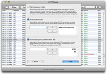

| Home |
|
 |
L'écran de préférences (accessible depuis le menu HTTPScoop quand aucune capture n'est en cours) vous permet de décrire quel type de trafic vous souhaitez capturer. Ces paramètres sont enregistrés dans vos préférences utilisateurs, donc soyez conscient qu'ils sont rechargés à chaque lancement de l'application. Paramètres : |
Mode promiscueux |
|---|
|
Le mode promiscueux vous permet de capturer les conversations HTTP qui n'impliquent pas la machine sur laquelle HTTPScoop est lancé. Celà peut être utile quand ni le client, ni le serveur n'utilisent OS X. Cela peut aussi être pratique pour tester le comportement d'un serveur face à différent clients. Pour que HTTPScoop puisse capturer les conversations HTTP, le trafic doit atteindre l'adaptateur réseau de votre ordinateur. Généralement, sur un réseau commuté, vous n'aurez accès qu'au trafic pour lequel votre machine est client ou serveur. Une des solutions consiste à connecter votre ordinateur au même hub que l'ordinateur à surveiller. Vous pouvez aussi écouter les conversations passant par un réseau sans fil non sécurisé bien que cela puisse ne pas marcher avec certaines routeurs sans fil. Veuillez contacter support@tuffcode.com pour rapporter les configurations ne fonctionnant pas. Attention : l'utilisation du mode promiscueux peut contrarier le respect de la vie privée. Soyez conscient que cela peut être detecté et assurez vous donc de toujours avoir l'autorisation de l'administrateur du réseau avant d'utiliser cette technique. |
Restreindre aux hôtes |
|---|
|
Cette option vous permet de limiter les conversations qui sont capturées à celles dont le client ou le serveur apparait dans la liste. Cette solution permet d'éviter le message "Trafic trop rapide : quelques paquets perdus" (voir Résolution des problèmes). Vous pouvez spécifier des noms d'hôtes (ex. www.tuffcode.com) aussi bien que des adresses IP. |
Restreindre aux ports |
|---|
|
Par défaut, HTTPScoop surveillera uniquement les conversations HTTP sur le port 80. Pour capturer sur d'autres ports TCP, vous pouvez les spécifier ici. N'oubliez pas d'ajouter explicitement le port 80 à la liste si vous voulez aussi capturer dessus. |
Ne pas limiter la taille de la sortie |
|---|
|
Normalement, HTTPScoop limite la taille des données présentées afin d'éviter de consommer trop de mémoire. Au delà de cette limite, les données seront tronquées et un avertissement sera affiché. Bien que cette limite soit généralement acceptable, certaines taches spécialisées peuvent demander le retrait de cette restriction. Désactivez cette sécurité à vos risques et périls ! |